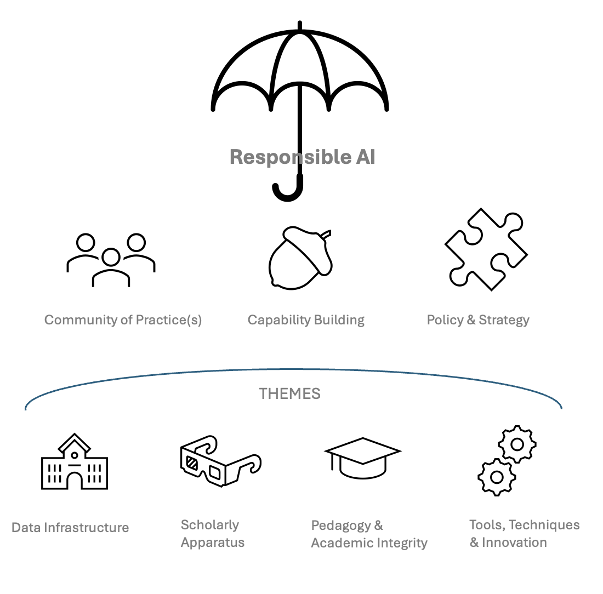

This is a placeholder webpage to announce the start of what will hopefully be a rewarding, productive and community-led initiative of the Faculty of Arts and Humanities at University of Southampton.
The site is aimed at staff and students of the Faculty – to provide a context for learning, sharing and research, including the development of a shared knowledge base. The site is also public, to encourage a community of practice and to document a live, ongoing exploration of the growing significance of Artificial Intelligence (AI) in the Higher Education sector, across all activities of research, education, enterprise and infrastructure.
For further details and/or to share thoughts, email: Prof. Sunil Manghani (Faculty AI Champion).
The project aligns with and will help inform AI@Southampton – an online space led by the Web Science Institute, established for faculties and other groups to come together, collaborate, and share work that involves artificial intelligence as part of their research.
Interdisciplinary AI is a University strategic priority, along with data in society, platform governance, social trust, democratic innovation, technological sustainability and other AI-related topics that form WSI’s unique socio-technical remit. It is vital that multiple perspectives from within and across the arts and humanities have a stake in what comes next…
Faculty-wide and University-facing. A collaborative initiative to engage critically with artificial intelligence within the domains of education, research, and enterprise, as well as educational administration and infrastructure.
Underpinned by a commitment to Responsible AI—not just in the immediate ethical sense, but in terms of institutional responsibility for shaping AI’s future role in higher education.
NB: The phrase ‘Thinking AI’ is intended to recall Victor Burgin's Thinking Photography (1982), which sought to establish a theoretical account of photography beyond aesthetic appreciation or technical documentation. Burgin recognized that despite photography's century-long history, a coherent theoretical framework remained underdeveloped. Today, AI might suggest a comparable, if not heightened ‘critical juncture’.
Current discussions largely oscillate between technical specifications on one hand, and ethical concerns on the other. What is missing is a rigorous analysis of AI as a socio-material set of practices and contestations. The topic of AI needs sensitivity and openness, as much as it warrants the richness of critical debate and practical exploration.
The pace of development in AI research and implementation is currenlty rapid and, at times, overwhelming. With a view to supporting a community of practice and enhancing capability across the Faculty, a Knowledge Base will be developed, alongside testing various ways of sharing ideas, facilitating dialogue, and supporting research and education.
The knowledge graph below is a (hastily prepared) prototype. It maps AI-related research outputs from the University’s ePrints repository. It will be refined in due course and further tools will be considered to help capture and connect emerging work across disciplines.